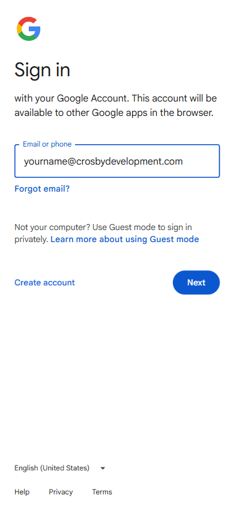

Adding your Crosby email to the Outlook mobile app
Step-by-step walkthrough for connecting your @crosbydevelopment.com Workspace email to the Microsoft Outlook app on your phone.
Before you start
- Open the App Store (iPhone) or Play Store (Android), search Microsoft Outlook, and install it if you don't have it yet. The icon is blue and white with an envelope and "O."
- The Outlook mobile app is the same app whether you've used "old" or "new" Outlook on desktop — there isn't a separate version.
- If you've never had Crosby email on this phone, skip Phase 1 and go straight to Phase 2.
Phase 1 — Remove the old account (skip if you've never set up Crosby email here)
Open Outlook
Tap the Outlook app icon to open it.
Open the side menu
Tap your profile picture (or the menu icon) in the top-left corner.
Tap the gear icon
In the bottom-left of the side menu, tap the ⚙ gear icon to open Settings.
Tap your old account
Under "Mail Accounts," tap the existing yourname@crosbydevelopment.com entry.
Delete the account
Scroll down and tap Delete Account. Confirm by tapping Delete.
Phase 2 — Add your Workspace account
Open Add Account
Still on the Settings screen, tap Add Mail Account → Add Email Account.
If this is your very first account, the app jumps straight to the "Add Account" screen when you open it.
Enter your Crosby email
Type your full address — yourname@crosbydevelopment.com — and tap Add Account.
Sign in to Google
The app detects your account is on Google Workspace and opens a Google sign-in page right inside Outlook. Your email is filled in — tap the blue Next button.

Enter your password
The next screen says Welcome and shows your Crosby email. Type your Workspace password and tap Next. If 2FA is on, complete the verification step.

Allow Outlook to access your account
Google will list the permissions Outlook needs. Scroll to the bottom and tap Allow or Continue.
Skip "Add another account"
Outlook asks if you want to add another account. Tap Maybe Later.
Allow notifications (optional)
If asked, tap Allow to get new-mail alerts, or Don't Allow to keep it quiet.
Troubleshooting
| Symptom | Fix |
|---|---|
| "Couldn't find your Google Account" | Check spelling. If still failing, your Workspace account may not be ready yet — call us. |
| Password rejected | Tap Forgot password? on the Google screen, or call us to reset. |
| App keeps spinning after Allow | Force-close Outlook and reopen it. The new account should appear in the side menu. |
| No new-mail notifications | iPhone: Settings → Notifications → Outlook → turn on. Android: long-press the app icon → App info → Notifications. |